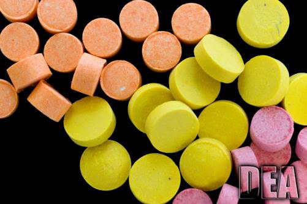
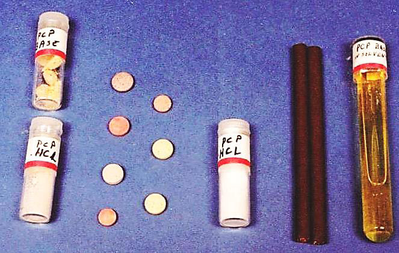
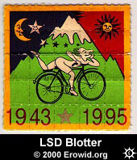
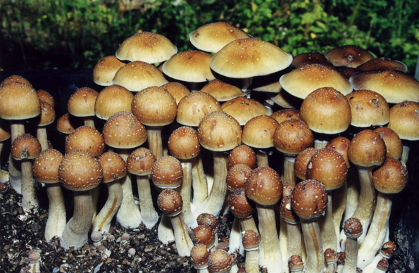
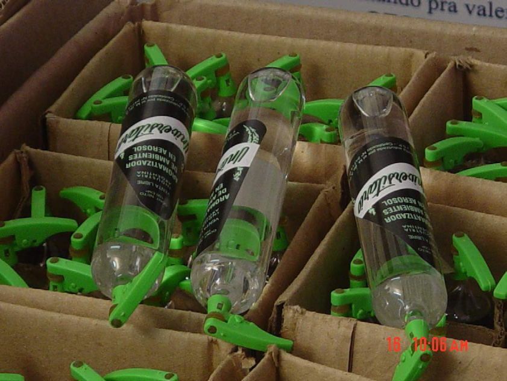

Drogas que em doses clínicas são utilizadas como anestésicos, mas em altas dosagens podem causar alucinações, efeitos de experiência fora do corpo (dissociação) e quase morte.


Fig. 16 - Formas de apresentação da fenciclidina (PCP). O PCP (fenciclidina, conhecido como “pó de anjo” ou peace pill) é uma droga sintética, desenvolvida como anestésico, utilizada de maneira recreacional para causar alucinações, aspirada ou fumada. A) Formas de uso Oral por ingestão de comprimidos. Também pode ser fumada, na forma de plantas pulverizadas com solução contendo PCP. B) Aspectos legais Na Portaria n.º 344/98-SVS/MS, a fenciclidina está presente na Lista A3 – Lista das Substâncias Psicotrópicas Sujeitas a Notificação de Receita “A”.
São drogas que provocam distorções e alterações na percepção do SNC. Geram estados alterados de percepção, sensação e pensamento. Podem induzir delírios, alucinações, ideias paranoides e outras alterações de humor.

Fig. 17 - Selo impregnado com LSD. O LSD (dietilamida do ácido lisérgico) ou LSD-25 é uma droga alucinógena que foi sintetizada em 1938 pelo químico suíço Albert Hoffmann, do laboratório Sandoz, usando como matéria-prima o ácido lisérgico, obtido de extratos de um fungo parasitário do centeio (Claviceps purpurea). Chegou a ser comercializado como uma forma de tratamento de distúrbios psicológicos, mas teve sua produção industrial descontinuada devido aos seus efeitos colaterais. A) Formas de apresentação do LSD e características Soluções contendo LSD são impregnadas em papel em forma de selos, micropontos entre fitas adesivas, micro comprimidos, cubos, granulado, açúcar, micro pirâmides, etc. B) Formas de uso Normalmente é administrado por absorção sublingual (embaixo da língua), podendo também ser injetado. A dosagem utilizada é da ordem de microgramas. Para um homem que pesa 70 kg, bastam apenas 20 microgramas do produto para produzir os efeitos alucinógenos. C) Ações e efeitos do LSD Os primeiros efeitos da droga surgem após um período de latência que pode variar de 30 a 40 minutos, verificando-se o surgimento de taquicardia, midríase e salivação, seguida de uma fase de excitação. Em sequência, aparecem as alucinações visuais em forma de imagens fantásticas e intensamente coloridas, geralmente de natureza cinética (imagens ondulantes) onde as paredes e os móveis parecem movimentar-se, e até mesmo experiências sinestésicas (por exemplo, sentir que sons possuem “cores”). A experiência, a princípio, tem caráter emocional, agradável, com sensação de euforia. Na fase final, podem aparecer estados de ansiedade e angústia. Um dos maiores problemas do uso do LSD é que, uma vez administrado ao organismo, ele pode ficar armazenado nos tecidos gordurosos, podendo provocar novos efeitos alucinógenos a qualquer momento posterior no indivíduo, fenômeno conhecido como flashback. D) Questões legais O LSD encontra-se incluído na Lista das Substâncias Psicotrópicas de Uso Proscrito no Brasil (Lista F2), constante da Portaria n.º 344/98-SVS/MS.

Fig. 18 - Cogumelos do gênero Psilocybe, fontes naturais de psilocibina. Existem cerca de 70 tipos de cogumelos no mundo que são capazes de provocar efeitos alucinógenos quando ingeridos. As maiores incidências do uso abusivo de cogumelos e/ou suas substâncias ativas ocorrem com o Psilocybe mexicana, Heim e o Stropharia cubensis, das ilhas do Pacífico, dos quais se extraem o alcaloide psilocibina. A psilocibina foi muito usada pelos Astecas e Maias em rituais místicos e é classificada como substância alucinógena. A) Formas de uso É consumida, geralmente, na forma de infusão (chá) preparada a partir dos cogumelos, ou em absorção sublingual (embaixo da língua). B) Ações e efeitos da psilocibina Tem ação semelhante aos efeitos provocados pelo LSD (estados alterados da consciência), porém com intensidade inferior.
A psilocibina encontra-se incluída na Lista das Substâncias Psicotrópicas de Uso Proscrito no Brasil (Lista F2), constante da Portaria n.º 344/98-SVS/MS.
A dimetiltriptamina (DMT) é um alcaloide natural extraído das sementes e folhas de diversos vegetais, dentre eles: Piptadenia peregrina (Fam. Mimosaceae), Prestonia amazônica, Haemadictyon amazonicum (Fam. Apocynaceae), Mimosa hostilis (jurema), Mimosa tenuiflora (jurema-preta), Desmanthus illinoensis e Psychotria viridis (chacrona). São normalmente encontrados na América do Sul e no Oriente. O nome científico da droga é N, N – dimetiltriptamina (3-[2-(dime tilamino)etil] indol).
Fig. 19 - Ayahuasca (chá de Santo Daime). É um chá com propriedade alucinógena (perturbadora do SNC) utilizado em rituais religiosos, principalmente na América do Sul, sendo as seitas mais conheci das a do Santo Daime e a UDV (União do Vegetal). O chá possui a combinação de duas classes de substâncias naturais: alcaloides da harmina (harmina e harmalina) e DMT, sendo preparado a partir de vegetais específicos que as contenham. Normalmente são empregadas as folhas de Psychotria viridis (chacrona), fonte de DMT, com caules da trepadeira Banisteriopsis caapi (cipó mariri), fonte de harmina e harmalina. Dependendo da sede da seita e da disponibilidade, outros vegetais podem ser empregados para preparação do chá, entre eles: Mimosa hostilis (jurema) e Desmanthus illinoensis (fontes de DMT), e Peganum harmala (Syrian rue), fonte de harmina e harmalina. A Banisteriopsis caapi (cipó mariri), denominada popularmente como iagê ou caapi, é uma trepadeira robusta, de 30 m ou mais de altura, com habitat natural na região do rio Negro. A Psychotria viridis (chacrona) é um arbusto de 3 m a 4 m de altura, de caule lenhoso e cilíndrico, com seu habitat na floresta amazônica. A) Formas de uso Oral por ingestão do chá. B) Ações e efeitos do chá de Santo Daime Alguns dos resultados da ingestão do chá de santo daime:
O chá também pode provocar irritações no fígado e na mucosa gástrica, além de intoxicações fortíssimas. Os efeitos psicodélicos do chá, por meio do DMT, quando do seu emprego na seita e no contexto do ritual religioso, são miragens ou visões, que se estendem por até 5 horas. C) Questões legais A dimetiltriptamina (DMT) encontra-se incluída na Lista das Substâncias Psicotrópicas de Uso Proscrito no Brasil (Lista F2), constante da Portaria n.º 344/98-SVS/MS. O Conselho Nacional Antidrogas, por meio da Resolução n.º 4-CONAD, de 4 de novembro de 2004, instituiu o grupo de trabalho multidisciplinar para levantamento e acompanhamento do uso religioso da ayahuasca (como também é conhecido o chá de santo Daime), bem como para a pesquisa de sua utilização terapêutica, em caráter experimental. O Conselho Nacional de Políticas sobre Drogas, por meio da Resolução n.º 1-CONAD, de 25 de janeiro de 2010, regulamentou o uso da bebida de uso restrito a ambientes religiosos. O relatório final, ratificando o uso religioso da ayahuasca, foi publicado no DOU de 26 de janeiro de 2010 (p. 58, Seção I).
Fig. 20 - Pessoa inalando substância volátil de produto doméstico, exemplificando o uso abusivo de inalantes. Os inalantes consistem em um grupo de substâncias comerciais de uso labo ratorial ou doméstico, e podem causar diversos efeitos no SNC, quando utilizados por inalação ou ingestão. Pela sua facilidade de aquisição, frequentemente são utilizados de forma abusiva. Exemplos de produtos comerciais com os solventes psicoativos presentes na formulação:
A) Formas de uso Os inalantes podem ser consumidos diretamente dos frascos originais ou transferidos para sacos plásticos ou panos. Uma das formas mais comuns de uso é uma mistura contendo éter etílico, clorofórmio, álcool e essências, conhecida popularmente como “cheirinho da loló” ou simplesmente “loló”. B) Ações e efeitos dos inalantes Estas substâncias, depois de inaladas, chegam rapidamente ao SNC via corrente sanguínea, causando alterações no estado de consciência, com estimu lação, arritmia cardíaca, desinibição e embriaguez. Seus efeitos depressores se assemelham muito aos de bebidas alcoólicas, mas de menor duração. O éter etílico e clorofórmio já foram utilizados como anestésicos, devido às suas propriedades sedativas. C) Formas de dependência Os inalantes podem causar dependência psíquica quando usados de maneira abusiva. Questões legais
Ministério da Justiça e Segurança Pública (MJSP), da Portaria n.º 344- SVS/MS e, de acordo com a Portaria n.º 204/2022-MJSP, seu controle é realizado pela Polícia Federal.
Fabricação e Síntese de Entorpecentes e/ou Psicotrópicos (Lista D2), sujeito a controle do Ministério da Justiça e Segurança Pública pela Portaria n.º 344-SVS/MS e, de acordo com a Portaria n.º 204/2022-MJSP, seu controle é realizado pela Polícia Federal.

Fig. 21 - Frascos de lança-perfume. O cloreto de etila é um solvente orgânico clorado, largamente empregado pela indústria química como solvente na fabricação, por exemplo, de plásticos. Nas condições normais de temperatura e pressão (CNTP), o cloreto de etila (ou cloroetano) é um gás. Acondicionado sob pressão, apresenta-se como uma substância líquida incolor, de temperatura de ebulição de 12 ºC, menos densa que a água, inflamável (produz uma chama verde). A) Ações e efeitos do lança-perfume É um depressor do sistema nervoso central e pode causar efeitos euforizantes. Seu emprego abusivo, no entanto, produz efeitos tão acentuados sobre o orga nismo que culminam com alteração da percepção. B) Formas de dependência O lança-perfume, tal como os demais inalantes, pode causar dependência psíquica quando usado de maneira abusiva. C) Aspectos legais O cloreto de etila está incluído na Lista de Insumos Químicos Utilizados para Fabricação e Síntese de Entorpecentes e/ou Psicotrópicos (Lista D2) e na Lista das Substâncias Psicotrópicas (Lista B1) da RDC n.º 39, de 9 de julho de 2012, da Agência Nacional de Vigilância Sanitária, que atualiza a lista de substâncias sujeitas a controle presente na Portaria n.º 344-SVS/MS. O uso de cloreto de etila é proscrito para fins médicos, bem como a sua utilização sob a forma de aerossol, aromatizador de ambiente ou de qualquer outra forma que possibilite o seu uso indevido.